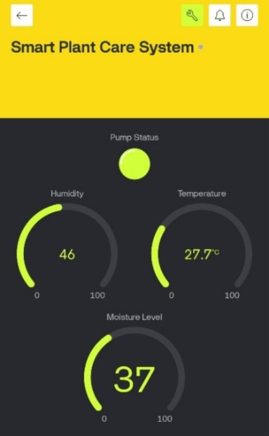
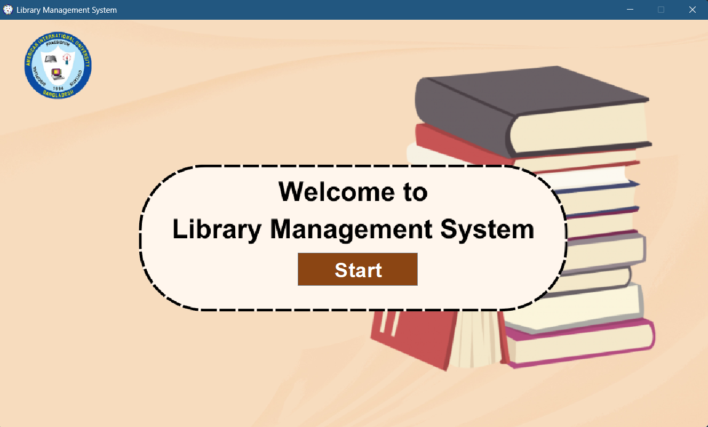
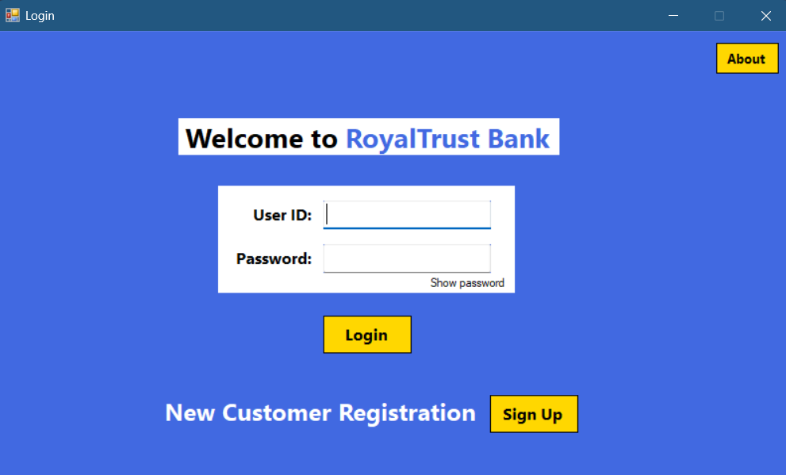

Featured Projects
-
Smart Water Irrigation System

 Project Overview: An end-to-end Machine Learning pipeline designed for agricultural optimization. It connects microprocessor-based sensor data with ML models to enable efficient water management using real-time inputs such as moisture, temperature, and humidity.
Key Capabilities:
- Predicts irrigation requirements based on sensor inputs
- Determines crop suitability through environmental analysis
- Integrates hardware sensor data with ML models
Tech Stack: Python, Scikit-learn, Pandas, Streamlit
-
Library Management System
 

Project Overview: A Java-based desktop application that streamlines library operations using a clean Swing GUI and a MySQL backend for structured data management. Includes a dedicated Publisher module for improved tracking.
Features:
- Book Management with full CRUD operations
- Student registration and book issuance/return tracking
- Publisher management module
- Refactored architecture and improved UI design
Tech Stack: Java, Swing, MySQL, XAMPP, phpMyAdmin
-
Banking Management System
 

Project Overview: A C# Windows Forms application simulating real-world banking operations with role-based authentication and transaction logging.
Features:
- Role-based login system (Customer, Employee, Manager)
- Secure deposits, withdrawals, transfers, and loan handling
- Loan approval and monitoring system
- Interactive and professional WinForms GUI
Tech Stack: C#, .NET Framework, SQL Server